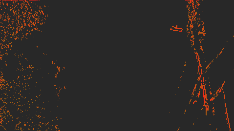
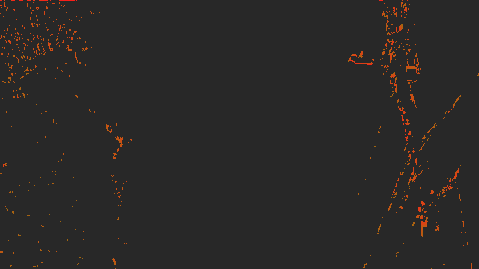
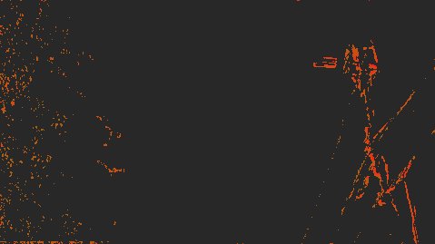
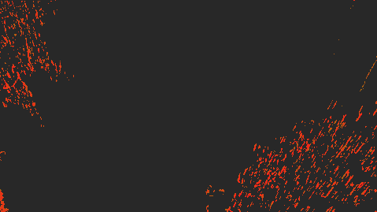
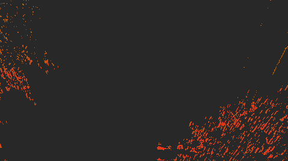
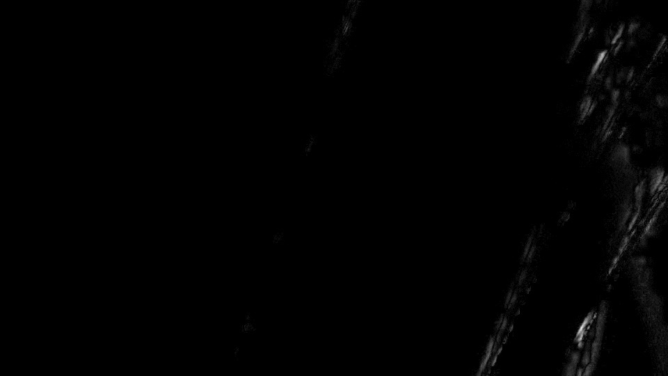

<title>pinterf vs DTL mvtools</title>
<meta name="claude:viewport-fit-sides" content="cover">
<link rel="preconnect" href="https://fonts.googleapis.com">
<link rel="preconnect" href="https://fonts.gstatic.com" crossorigin>
<link rel="stylesheet" href="https://fonts.googleapis.com/css2?family=Schibsted+Grotesk:wght@400;600;800&family=Fragment+Mono&display=swap">
<style>
/* Layout: a single lab-report column; figures break wider; data in mono, amber marks what changed */
:root {
  --bg: #f3f4f2; --panel: #ffffff; --fg: #1b1f1d; --muted: #5d6662; --line: #d6dad7;
  --accent: #b86e00; --fixed: #3f6fb0; --same: #2f7d55; --same-bg: #e2efe7; --ink-img: #111;
  --display: "Schibsted Grotesk", "Segoe UI", system-ui, sans-serif;
  --body: "Schibsted Grotesk", "Segoe UI", system-ui, sans-serif;
  --mono: "Fragment Mono", ui-monospace, "Cascadia Mono", Consolas, monospace;
}
@media (prefers-color-scheme: dark) { :root:not([data-theme="light"]) {
  --bg: #121513; --panel: #1a1e1c; --fg: #e4e8e5; --muted: #98a29d; --line: #2c322f;
  --accent: #f0a429; --fixed: #7da7e8; --same: #6cc796; --same-bg: #1d2e25; color-scheme: dark } }
:root[data-theme="dark"] {
  --bg: #121513; --panel: #1a1e1c; --fg: #e4e8e5; --muted: #98a29d; --line: #2c322f;
  --accent: #f0a429; --fixed: #7da7e8; --same: #6cc796; --same-bg: #1d2e25; color-scheme: dark }
body { background: var(--bg); color: var(--fg); font: 16px/1.55 var(--body); }
main { max-width: 1080px; margin: 0 auto; padding-block: 40px 72px;
  padding-left: max(16px, env(safe-area-inset-left, 0px)); padding-right: max(16px, env(safe-area-inset-right, 0px));
  display: grid; gap: 56px; }
section { display: grid; gap: 18px; min-width: 0; }
h1 { font: 800 clamp(30px, 5vw, 46px)/1.08 var(--display); margin: 0; letter-spacing: -0.015em; text-wrap: balance; }
h2 { font: 800 24px/1.2 var(--display); margin: 0; text-wrap: balance; }
h3 { font: 600 15px/1.3 var(--display); margin: 0; }
p { margin: 0; max-width: 68ch; }
.lede { color: var(--muted); font-size: 17px; }
.eyebrow { font: 12px var(--mono); letter-spacing: 0.08em; text-transform: uppercase; color: var(--accent); }
code, .mono { font-family: var(--mono); font-size: 0.92em; }
.builds { display: grid; grid-template-columns: repeat(auto-fit, minmax(260px, 1fr)); gap: 12px; }
.build { background: var(--panel); border: 1px solid var(--line); border-radius: 6px; padding: 14px 16px; display: grid; gap: 4px; min-width: 0; }
.build .k { font: 12px var(--mono); color: var(--muted); text-transform: uppercase; letter-spacing: 0.06em; }
.build .v { font: 600 16px var(--display); }
.build .d { font: 13px var(--mono); color: var(--muted); overflow-wrap: anywhere; }

.scroll { overflow-x: auto; }
table { border-collapse: collapse; width: 100%; font-variant-numeric: tabular-nums; }
th, td { padding: 9px 12px; text-align: left; border-bottom: 1px solid var(--line); white-space: nowrap; }
th { font: 600 13px var(--display); color: var(--muted); }
td.num, th.num { text-align: right; font-family: var(--mono); font-size: 14px; }
.cell-same { background: var(--same-bg); color: var(--same); font: 13px var(--mono); text-align: center; border: 2px solid var(--bg); }
.matrix th:first-child { min-width: 220px; }
.note { font-size: 14px; color: var(--muted); }
.note b { color: var(--fg); font-weight: 600; }

.maps { display: grid; grid-template-columns: repeat(3, minmax(0, 1fr)); gap: 12px; }
@media (max-width: 760px) { .maps { grid-template-columns: 1fr; } }
figure { margin: 0; display: grid; gap: 6px; min-width: 0; }
figure img { width: 100%; display: block; border-radius: 3px; background: var(--ink-img); }
img.px { image-rendering: pixelated; }
figcaption { font-size: 13px; color: var(--muted); }
figcaption b { color: var(--fg); font-weight: 600; }
.legend { display: flex; flex-wrap: wrap; gap: 6px 18px; font-size: 13px; color: var(--muted); align-items: center; }
.sw { display: inline-block; width: 12px; height: 12px; border-radius: 2px; vertical-align: -1px; margin-right: 6px; }

.ab { position: relative; border-radius: 3px; overflow: hidden; background: var(--ink-img); aspect-ratio: 16 / 9; max-width: 100%; }
.ab img { position: absolute; inset: 0; width: 100%; height: 100%; object-fit: cover; }
.ab .top { clip-path: inset(0 calc(100% - var(--split, 50%)) 0 0); }
.ab .bar { position: absolute; top: 0; bottom: 0; left: var(--split, 50%); width: 2px; background: var(--accent); transform: translateX(-1px); pointer-events: none; }
.ab .tag { position: absolute; top: 10px; font: 12px var(--mono); padding: 3px 7px; border-radius: 3px; background: rgba(0,0,0,.6); color: #fff; }
.ab .tl { left: 10px; } .ab .tr { right: 10px; }
.controls { display: flex; flex-wrap: wrap; gap: 10px 16px; align-items: center; }
.controls input[type=range] { flex: 1 1 220px; accent-color: var(--accent); }
.seg { display: inline-flex; border: 1px solid var(--line); border-radius: 6px; overflow: hidden; }
.seg button { font: 13px var(--body); background: var(--panel); color: var(--fg); border: 0; padding: 7px 12px; cursor: pointer; }
.seg button + button { border-left: 1px solid var(--line); }
.seg button[aria-pressed="true"] { background: var(--accent); color: #111; }
button:focus-visible, input:focus-visible { outline: 2px solid var(--accent); outline-offset: 2px; }
.two { display: grid; grid-template-columns: minmax(0, 1.2fr) minmax(0, 1fr); gap: 20px; align-items: start; }
@media (max-width: 760px) { .two { grid-template-columns: 1fr; } }

.psnr { display: grid; grid-template-columns: repeat(8, minmax(0, 1fr)); gap: 6px; align-items: end; height: 150px; }
.psnr .col { display: grid; grid-template-rows: 1fr auto auto; height: 100%; gap: 4px; text-align: center; min-width: 0; }
.psnr .pair { display: grid; grid-template-columns: 1fr 1fr; gap: 2px; align-items: end; min-height: 0; }
.psnr .bar { background: var(--accent); border-radius: 2px 2px 0 0; }
.psnr .bar.fx { background: var(--fixed); }
.psnr .bar.inf { background: var(--same); }
.bug { display: grid; gap: 14px; border: 1px solid var(--line); border-left: 4px solid var(--accent); background: var(--panel); border-radius: 6px; padding: 18px 20px; min-width: 0; }
.bug pre { margin: 0; padding: 10px 12px; background: var(--bg); border-radius: 4px; overflow-x: auto; font-size: 13px; }
.bug .maps { grid-template-columns: repeat(2, minmax(0, 1fr)); }
@media (max-width: 760px) { .bug .maps { grid-template-columns: 1fr; } }
.psnr .v { font: 11px var(--mono); color: var(--muted); }
.psnr .n { font: 12px var(--mono); }
details { background: var(--panel); border: 1px solid var(--line); border-radius: 6px; min-width: 0; }
details summary { cursor: pointer; padding: 10px 14px; font-size: 14px; color: var(--muted); }
details summary code { color: var(--fg); }
pre.src { margin: 0; padding: 12px 14px; border-top: 1px solid var(--line); overflow-x: auto; font-size: 12.5px; line-height: 1.5; }
a { color: var(--accent); }
</style>

<main>
  <header style="display:grid; gap:14px">
    <div class="eyebrow">mvtools2 · CPU output check · 2026-10-30</div>
    <h1>pinterf and DTL's fork give the same pictures</h1>
    <p class="lede">The uc_FRC analysis chain, MFlowFps and MDegrain2 + MCompensate, run with both DLLs on the same UHD clip. With the same parameters every vector and every pixel is equal. The only thing DTL's current branch adds, MRecalculate <code>smooth=2</code>, has a bug: the widened search radius is never reset, so it keeps growing for the rest of the frame. Most of its visible damage comes from that.</p>
  </header>

  <section>
    <div class="builds">
      <div class="build"><span class="k">A · pinterf</span><span class="v">our fork, CPU path</span><span class="d">emcodem/mvtools gpu_work, build_m1, gpu off · base pinterf mvtools-pfmod cdf04a5 (2.7.47)</span></div>
      <div class="build"><span class="k">B · DTL</span><span class="v">DTL2020 post_2.7.47_822</span><span class="d">c688008, 2026-09-27, built from source with the same toolchain (v145, x64)</span></div>
      <div class="build"><span class="k">Material</span><span class="v">seg1_wires_pole.mp4</span><span class="d">3840×2160, 10-bit 4:2:2, 29.97 fps · converted to 8-bit, 4:2:0, 4:4:4 in the script</span></div>
    </div>
  </section>

  <section>
    <div class="eyebrow">1 · Same parameters</div>
    <h2>Every chain, every format: identical</h2>
    <div class="scroll">
      <table class="matrix">
        <thead><tr><th>Chain</th><th class="num">10-bit 4:2:2</th><th class="num">8-bit 4:2:2</th><th class="num">10-bit 4:2:0</th><th class="num">8-bit 4:2:0</th><th class="num">10-bit 4:4:4</th></tr></thead>
        <tbody>
          <tr><td>uc_FRC vectors · MAnalyse 32×32 + MRecalculate 16×16, bv/fv at frames 10 and 50</td><td class="cell-same">= bytes</td><td class="cell-same">= bytes</td><td class="cell-same">= bytes</td><td class="cell-same">= bytes</td><td class="cell-same">= bytes</td></tr>
          <tr><td>MFlowFps 30000/1001 → 24000/1001, mask=2 · 8 frames</td><td class="cell-same">= md5</td><td class="cell-same">= md5</td><td class="cell-same">= md5</td><td class="cell-same">= md5</td><td class="cell-same">= md5</td></tr>
          <tr><td>MDegrain2 + MCompensate, 16×16 · 30 frames</td><td class="cell-same">= md5</td><td class="cell-same">= md5</td><td class="cell-same">= md5</td><td class="cell-same">= md5</td><td class="cell-same">= md5</td></tr>
        </tbody>
      </table>
    </div>
    <p class="note"><b>Control.</b> A comparison that can only say "equal" proves nothing, so the same vector script was run with <code>smooth=2</code> in MRecalculate. Both DLLs accept it, and the vectors then differ in 32k to 91k of the 386,553 words per frame. So the two runs really used two different DLLs.</p>
    <p class="note"><b>AreaMode is not on this branch.</b> DTL's newest branch is pinterf 2.7.47 plus <code>smooth=2</code> (about 45 changed lines in <code>PlaneOfBlocks.cpp</code>). AreaMode and his other search experiments are on his older default branch (2.7.46-a, last changed June 2024).</p>
  </section>

  <section>
    <div class="eyebrow">2 · The one difference · MRecalculate smooth=2</div>
    <h2>Where DTL's adaptive radius changes the vectors</h2>
    <p>With <code>smooth=2</code>, a block whose SAD stays above <code>thSAD</code> after the normal search is searched again with a wider radius: the largest difference between the four MAnalyse vectors it was interpolated from (capped). Below, backward vectors of frame 10, one pixel per 16×16 block (479×269).</p>
    <div class="maps">
      <figure><figcaption><b>A · pinterf</b> (smooth=1, production setting)</figcaption></figure>
      <figure><figcaption><b>B · DTL smooth=2</b></figcaption></figure>
      <figure><figcaption><b>Changed blocks</b>: 4,666 of 128,851</figcaption></figure>
    </div>
    <div class="legend">
      <span>Vector maps: hue = direction, saturation = length, white = no motion.</span>
      <span><i class="sw" style="background:#282828"></i>unchanged</span>
      <span><i class="sw" style="background:#8c6b0e"></i>small change</span>
      <span><i class="sw" style="background:#ff1a1a"></i>large change</span>
    </div>
    <p>The changed blocks follow the pole and the wires on the right and the leaves on the left: thin or fine structures that move differently from what surrounds them. That is where the four interpolated input vectors disagree, so that is where the radius grows.</p>
    <div class="scroll">
      <table>
        <thead><tr><th>Vector frame</th><th class="num">Changed blocks</th><th class="num">Share</th><th class="num">Lower SAD</th><th class="num">Higher SAD</th><th class="num">SAD sum</th><th class="num">Largest change</th></tr></thead>
        <tbody>
          <tr><td>frame 10 backward</td><td class="num">4,666</td><td class="num">3.62%</td><td class="num">4,666</td><td class="num">0</td><td class="num">−7.4%</td><td class="num">22.6 px</td></tr>
          <tr><td>frame 10 forward</td><td class="num">2,981</td><td class="num">2.31%</td><td class="num">2,981</td><td class="num">0</td><td class="num">−5.9%</td><td class="num">21.4 px</td></tr>
          <tr><td>frame 50 backward</td><td class="num">4,421</td><td class="num">3.43%</td><td class="num">4,421</td><td class="num">0</td><td class="num">−5.6%</td><td class="num">12.4 px</td></tr>
          <tr><td>frame 50 forward</td><td class="num">4,277</td><td class="num">3.32%</td><td class="num">4,277</td><td class="num">0</td><td class="num">−7.2%</td><td class="num">18.7 px</td></tr>
        </tbody>
      </table>
    </div>
    <p class="note">Every changed vector has a lower SAD, as expected: the wider search only replaces a vector by a better match. A lower SAD is not by itself a better interpolated picture.</p>
    <div class="bug">
      <h3>The radius never shrinks again</h3>
      <p>The new code writes the widened radius into <code>nSearchParam</code>, a member of <code>PlaneOfBlocks</code> that is set from <code>searchparam</code> once per frame and is not restored after the block:</p>
      <pre class="mono">nSearchParam = std::clamp(adaptiveSearchParam, nSearchParam, RECALCULATE_ADAPTIVE_RADIUS_LIMIT); // limit 100</pre>
      <p>The lower bound of the clamp is the current value, so the radius can only grow. After the first bad block whose four input vectors disagree, every later bad block in the frame is searched with that radius, up to 100 half-pel (50 px), even where its own input vectors agree. With <code>mt=true</code> all slices share the member, so it is also a data race.</p>
      <p>Test build with the radius restored after each block (two added lines, otherwise DTL's code):</p>
      <div class="scroll">
        <table>
          <thead><tr><th>Vector frame</th><th class="num">Changed, as released</th><th class="num">Changed, fixed</th><th class="num">SAD sum, released</th><th class="num">SAD sum, fixed</th></tr></thead>
          <tbody>
            <tr><td>frame 10 backward</td><td class="num">4,666</td><td class="num">1,929</td><td class="num">−7.4%</td><td class="num">−2.8%</td></tr>
            <tr><td>frame 10 forward</td><td class="num">2,981</td><td class="num">1,636</td><td class="num">−5.9%</td><td class="num">−3.1%</td></tr>
            <tr><td>frame 50 backward</td><td class="num">4,421</td><td class="num">426</td><td class="num">−5.6%</td><td class="num">−0.3%</td></tr>
            <tr><td>frame 50 forward</td><td class="num">4,277</td><td class="num">810</td><td class="num">−7.2%</td><td class="num">−0.7%</td></tr>
          </tbody>
        </table>
      </div>
      <div class="maps">
        <figure><figcaption>Changed blocks, frame 10 backward · <b>as released</b></figcaption></figure>
        <figure><figcaption>Changed blocks, frame 10 backward · <b>radius fixed</b></figcaption></figure>
      </div>
    </div>
    <div class="maps">
      <figure><figcaption>Changed blocks · frame 10 forward</figcaption></figure>
      <figure><figcaption>Changed blocks · frame 50 backward</figcaption></figure>
      <figure><figcaption>Changed blocks · frame 50 forward</figcaption></figure>
    </div>
  </section>

  <section>
    <div class="eyebrow">3 · In the picture · MFlowFps output</div>
    <h2>The interpolated frame, pinterf against DTL smooth=2</h2>
    <div class="two">
      <figure><figcaption>Output frame 5 of 8 (24000/1001). The amber box is the crop below, at full resolution (960×540 of 3840×2160).</figcaption></figure>
      <div style="display:grid; gap:10px">
        <h3>Difference to pinterf per output frame (PSNR, RGB average)</h3>
        <div class="psnr" id="psnr" role="img" aria-label="PSNR per frame against pinterf, DTL as released and DTL fixed"></div>
        <div class="legend"><span><i class="sw" style="background:var(--accent)"></i>DTL as released</span><span><i class="sw" style="background:var(--fixed)"></i>DTL, radius fixed</span><span>higher = closer to pinterf</span></div>
        <p class="note">Frames 3 and 7 land on source frames, so no vectors are used and all three are identical. Elsewhere the release differs by 57–59 dB, the fixed build by 60–63 dB.</p>
      </div>
    </div>
    <div class="controls">
      <div class="seg" role="group" aria-label="Comparison view">
        <button type="button" id="v-ab" aria-pressed="true">A / B</button>
        <button type="button" id="v-diff" aria-pressed="false">Difference ×12</button>
      </div>
      <div class="seg" role="group" aria-label="DTL variant">
        <button type="button" id="b-rel" aria-pressed="true">B: DTL as released</button>
        <button type="button" id="b-fix" aria-pressed="false">B: radius fixed</button>
      </div>
      <input type="range" id="split" min="0" max="100" value="50" aria-label="Split position between pinterf and DTL">
    </div>
    <div class="ab" id="ab">
      
      
      
      <div class="bar" id="bar"></div>
      <span class="tag tl" id="tl">A · pinterf</span><span class="tag tr" id="tr">B · DTL smooth=2</span>
    </div>
  </section>

  <section>
    <div class="eyebrow">How it was run</div>
    <p class="note">Same AviSynth+ scripts for both DLLs, only the <code>LoadPlugin</code> path changed; <code>mt=false</code> for MSuper / MAnalyse / MRecalculate (one slice). Vector frames compared word by word after the 64-word header, pictures by <code>framemd5</code>. Parameters our fork adds (<code>gpu</code>, MFlowFps <code>mt</code>) were left out because DTL's fork does not have them.</p>
  </section>
  <section>
    <div class="eyebrow">Scripts, as run</div>
    <h2>The AviSynth+ scripts</h2>
    <p class="note">Copied unchanged from the runs, including the local paths. They differ only in the <code>LoadPlugin</code> path of mvtools2.dll, <code>smooth=2,</code> in MRecalculate and the last line. The missing line break before <code>out =</code> / <code>return</code> comes from the script generator; AviSynth+ parses it as two statements. The identity check ran the vec, flow and degrain scripts in five formats by appending to the source line: nothing (10-bit 4:2:2), <code>.ConvertBits(8, dither=-1)</code>, <code>.ConvertToYUV420()</code>, <code>.ConvertBits(8, dither=-1).ConvertToYUV420()</code>, <code>.ConvertToYUV444()</code>. Output: <code>ffmpeg -i x_vec.avs -f rawvideo</code> for vectors, <code>-f framemd5</code> or <code>-pix_fmt rgb24 x_%d.png</code> for pictures. All scripts, the ffmpeg commands and the patch: <a href="https://github.com/emcodem/mvtools/tree/gpu_work/compare/dtl_smooth2">github.com/emcodem/mvtools/…/compare/dtl_smooth2</a>.</p>
    <details open><summary><code>pinterf_sm1_flow.avs</code> · A · pinterf, smooth=1 (default): MFlowFps frames 18–25</summary>
<pre class="mono src">LoadPlugin(&quot;C:\dev\uconvert\dlls\LSMASHSource.dll&quot;)
LoadPlugin(&quot;C:\dev\uconvert\dlls\RgTools.dll&quot;)
LoadPlugin(&quot;C:\dev\mvtools\profile\build_m1\mvtools2.dll&quot;)
SEGFILE = &quot;C:\dev\mvtools\profile\clips\seg1_wires_pole.mp4&quot;
m = LWLibavVideoSource(SEGFILE, cachefile=SEGFILE + &quot;.lwi&quot;)
pre = m.RemoveGrain(22)
supf = MSuper(pre, pel=2, hpad=16, vpad=16, rfilter=4, mt=false)
sup = MSuper(m, pel=2, hpad=16, vpad=16, rfilter=4, levels=1, mt=false)
bv = MAnalyse(supf, isb=true, blksize=32, overlap=16, search=3, searchparam=2, truemotion=true, chroma=true, mt=false)
fv = MAnalyse(supf, isb=false, blksize=32, overlap=16, search=3, searchparam=2, truemotion=true, chroma=true, mt=false)
bv = MRecalculate(sup, bv, blksize=16, overlap=8, thSAD=100, search=3, searchparam=2, truemotion=true, chroma=true, mt=false)
fv = MRecalculate(sup, fv, blksize=16, overlap=8, thSAD=100, search=3, searchparam=2, truemotion=true, chroma=true, mt=false)out = MFlowFps(m, sup, bv, fv, num=24000, den=1001, mask=2, ml=200, blend=false)
return out.Trim(18, 25)</pre></details>
    <details><summary><code>pinterf_sm1_vec.avs</code> · A · pinterf, smooth=1: vector frames bv/fv 10, bv/fv 50</summary>
<pre class="mono src">LoadPlugin(&quot;C:\dev\uconvert\dlls\LSMASHSource.dll&quot;)
LoadPlugin(&quot;C:\dev\uconvert\dlls\RgTools.dll&quot;)
LoadPlugin(&quot;C:\dev\mvtools\profile\build_m1\mvtools2.dll&quot;)
SEGFILE = &quot;C:\dev\mvtools\profile\clips\seg1_wires_pole.mp4&quot;
m = LWLibavVideoSource(SEGFILE, cachefile=SEGFILE + &quot;.lwi&quot;)
pre = m.RemoveGrain(22)
supf = MSuper(pre, pel=2, hpad=16, vpad=16, rfilter=4, mt=false)
sup = MSuper(m, pel=2, hpad=16, vpad=16, rfilter=4, levels=1, mt=false)
bv = MAnalyse(supf, isb=true, blksize=32, overlap=16, search=3, searchparam=2, truemotion=true, chroma=true, mt=false)
fv = MAnalyse(supf, isb=false, blksize=32, overlap=16, search=3, searchparam=2, truemotion=true, chroma=true, mt=false)
bv = MRecalculate(sup, bv, blksize=16, overlap=8, thSAD=100, search=3, searchparam=2, truemotion=true, chroma=true, mt=false)
fv = MRecalculate(sup, fv, blksize=16, overlap=8, thSAD=100, search=3, searchparam=2, truemotion=true, chroma=true, mt=false)return Interleave(bv.Trim(10, -1), fv.Trim(10, -1), bv.Trim(50, -1), fv.Trim(50, -1))</pre></details>
    <details><summary><code>dtl_sm1_flow.avs</code> · B · DTL, smooth=1: MFlowFps</summary>
<pre class="mono src">LoadPlugin(&quot;C:\dev\uconvert\dlls\LSMASHSource.dll&quot;)
LoadPlugin(&quot;C:\dev\uconvert\dlls\RgTools.dll&quot;)
LoadPlugin(&quot;C:\Users\User\AppData\Local\Temp\claude\C--dev-mvtools-mvtools\91946ad5-43ab-4a78-8fef-4a9c93d7c949\scratchpad\dtl\build\mvtools2.dll&quot;)
SEGFILE = &quot;C:\dev\mvtools\profile\clips\seg1_wires_pole.mp4&quot;
m = LWLibavVideoSource(SEGFILE, cachefile=SEGFILE + &quot;.lwi&quot;)
pre = m.RemoveGrain(22)
supf = MSuper(pre, pel=2, hpad=16, vpad=16, rfilter=4, mt=false)
sup = MSuper(m, pel=2, hpad=16, vpad=16, rfilter=4, levels=1, mt=false)
bv = MAnalyse(supf, isb=true, blksize=32, overlap=16, search=3, searchparam=2, truemotion=true, chroma=true, mt=false)
fv = MAnalyse(supf, isb=false, blksize=32, overlap=16, search=3, searchparam=2, truemotion=true, chroma=true, mt=false)
bv = MRecalculate(sup, bv, blksize=16, overlap=8, thSAD=100, search=3, searchparam=2, truemotion=true, chroma=true, mt=false)
fv = MRecalculate(sup, fv, blksize=16, overlap=8, thSAD=100, search=3, searchparam=2, truemotion=true, chroma=true, mt=false)out = MFlowFps(m, sup, bv, fv, num=24000, den=1001, mask=2, ml=200, blend=false)
return out.Trim(18, 25)</pre></details>
    <details><summary><code>dtl_sm2_flow.avs</code> · B · DTL, smooth=2 as released: MFlowFps</summary>
<pre class="mono src">LoadPlugin(&quot;C:\dev\uconvert\dlls\LSMASHSource.dll&quot;)
LoadPlugin(&quot;C:\dev\uconvert\dlls\RgTools.dll&quot;)
LoadPlugin(&quot;C:\Users\User\AppData\Local\Temp\claude\C--dev-mvtools-mvtools\91946ad5-43ab-4a78-8fef-4a9c93d7c949\scratchpad\dtl\build\mvtools2.dll&quot;)
SEGFILE = &quot;C:\dev\mvtools\profile\clips\seg1_wires_pole.mp4&quot;
m = LWLibavVideoSource(SEGFILE, cachefile=SEGFILE + &quot;.lwi&quot;)
pre = m.RemoveGrain(22)
supf = MSuper(pre, pel=2, hpad=16, vpad=16, rfilter=4, mt=false)
sup = MSuper(m, pel=2, hpad=16, vpad=16, rfilter=4, levels=1, mt=false)
bv = MAnalyse(supf, isb=true, blksize=32, overlap=16, search=3, searchparam=2, truemotion=true, chroma=true, mt=false)
fv = MAnalyse(supf, isb=false, blksize=32, overlap=16, search=3, searchparam=2, truemotion=true, chroma=true, mt=false)
bv = MRecalculate(sup, bv, blksize=16, overlap=8, thSAD=100, smooth=2, search=3, searchparam=2, truemotion=true, chroma=true, mt=false)
fv = MRecalculate(sup, fv, blksize=16, overlap=8, thSAD=100, smooth=2, search=3, searchparam=2, truemotion=true, chroma=true, mt=false)out = MFlowFps(m, sup, bv, fv, num=24000, den=1001, mask=2, ml=200, blend=false)
return out.Trim(18, 25)</pre></details>
    <details><summary><code>dtl_sm2_vec.avs</code> · B · DTL, smooth=2 as released: vector frames</summary>
<pre class="mono src">LoadPlugin(&quot;C:\dev\uconvert\dlls\LSMASHSource.dll&quot;)
LoadPlugin(&quot;C:\dev\uconvert\dlls\RgTools.dll&quot;)
LoadPlugin(&quot;C:\Users\User\AppData\Local\Temp\claude\C--dev-mvtools-mvtools\91946ad5-43ab-4a78-8fef-4a9c93d7c949\scratchpad\dtl\build\mvtools2.dll&quot;)
SEGFILE = &quot;C:\dev\mvtools\profile\clips\seg1_wires_pole.mp4&quot;
m = LWLibavVideoSource(SEGFILE, cachefile=SEGFILE + &quot;.lwi&quot;)
pre = m.RemoveGrain(22)
supf = MSuper(pre, pel=2, hpad=16, vpad=16, rfilter=4, mt=false)
sup = MSuper(m, pel=2, hpad=16, vpad=16, rfilter=4, levels=1, mt=false)
bv = MAnalyse(supf, isb=true, blksize=32, overlap=16, search=3, searchparam=2, truemotion=true, chroma=true, mt=false)
fv = MAnalyse(supf, isb=false, blksize=32, overlap=16, search=3, searchparam=2, truemotion=true, chroma=true, mt=false)
bv = MRecalculate(sup, bv, blksize=16, overlap=8, thSAD=100, smooth=2, search=3, searchparam=2, truemotion=true, chroma=true, mt=false)
fv = MRecalculate(sup, fv, blksize=16, overlap=8, thSAD=100, smooth=2, search=3, searchparam=2, truemotion=true, chroma=true, mt=false)return Interleave(bv.Trim(10, -1), fv.Trim(10, -1), bv.Trim(50, -1), fv.Trim(50, -1))</pre></details>
    <details><summary><code>fix_sm2_flow.avs</code> · B + radius patch, smooth=2: MFlowFps</summary>
<pre class="mono src">LoadPlugin(&quot;C:\dev\uconvert\dlls\LSMASHSource.dll&quot;)
LoadPlugin(&quot;C:\dev\uconvert\dlls\RgTools.dll&quot;)
LoadPlugin(&quot;C:\Users\User\AppData\Local\Temp\claude\C--dev-mvtools-mvtools\91946ad5-43ab-4a78-8fef-4a9c93d7c949\scratchpad\dtl\buildfix\mvtools2.dll&quot;)
SEGFILE = &quot;C:\dev\mvtools\profile\clips\seg1_wires_pole.mp4&quot;
m = LWLibavVideoSource(SEGFILE, cachefile=SEGFILE + &quot;.lwi&quot;)
pre = m.RemoveGrain(22)
supf = MSuper(pre, pel=2, hpad=16, vpad=16, rfilter=4, mt=false)
sup = MSuper(m, pel=2, hpad=16, vpad=16, rfilter=4, levels=1, mt=false)
bv = MAnalyse(supf, isb=true, blksize=32, overlap=16, search=3, searchparam=2, truemotion=true, chroma=true, mt=false)
fv = MAnalyse(supf, isb=false, blksize=32, overlap=16, search=3, searchparam=2, truemotion=true, chroma=true, mt=false)
bv = MRecalculate(sup, bv, blksize=16, overlap=8, thSAD=100, smooth=2, search=3, searchparam=2, truemotion=true, chroma=true, mt=false)
fv = MRecalculate(sup, fv, blksize=16, overlap=8, thSAD=100, smooth=2, search=3, searchparam=2, truemotion=true, chroma=true, mt=false)out = MFlowFps(m, sup, bv, fv, num=24000, den=1001, mask=2, ml=200, blend=false)
return out.Trim(18, 25)</pre></details>
    <details><summary><code>fix_sm2_vec.avs</code> · B + radius patch, smooth=2: vector frames</summary>
<pre class="mono src">LoadPlugin(&quot;C:\dev\uconvert\dlls\LSMASHSource.dll&quot;)
LoadPlugin(&quot;C:\dev\uconvert\dlls\RgTools.dll&quot;)
LoadPlugin(&quot;C:\Users\User\AppData\Local\Temp\claude\C--dev-mvtools-mvtools\91946ad5-43ab-4a78-8fef-4a9c93d7c949\scratchpad\dtl\buildfix\mvtools2.dll&quot;)
SEGFILE = &quot;C:\dev\mvtools\profile\clips\seg1_wires_pole.mp4&quot;
m = LWLibavVideoSource(SEGFILE, cachefile=SEGFILE + &quot;.lwi&quot;)
pre = m.RemoveGrain(22)
supf = MSuper(pre, pel=2, hpad=16, vpad=16, rfilter=4, mt=false)
sup = MSuper(m, pel=2, hpad=16, vpad=16, rfilter=4, levels=1, mt=false)
bv = MAnalyse(supf, isb=true, blksize=32, overlap=16, search=3, searchparam=2, truemotion=true, chroma=true, mt=false)
fv = MAnalyse(supf, isb=false, blksize=32, overlap=16, search=3, searchparam=2, truemotion=true, chroma=true, mt=false)
bv = MRecalculate(sup, bv, blksize=16, overlap=8, thSAD=100, smooth=2, search=3, searchparam=2, truemotion=true, chroma=true, mt=false)
fv = MRecalculate(sup, fv, blksize=16, overlap=8, thSAD=100, smooth=2, search=3, searchparam=2, truemotion=true, chroma=true, mt=false)return Interleave(bv.Trim(10, -1), fv.Trim(10, -1), bv.Trim(50, -1), fv.Trim(50, -1))</pre></details>
    <details><summary><code>pinterf_degrain.avs</code> · identity check: MDegrain2 + MCompensate (same script for B)</summary>
<pre class="mono src">LoadPlugin(&quot;C:\dev\uconvert\dlls\LSMASHSource.dll&quot;)
LoadPlugin(&quot;C:\dev\uconvert\dlls\RgTools.dll&quot;)
LoadPlugin(&quot;C:\dev\mvtools\profile\build_m1\mvtools2.dll&quot;)
SEGFILE = &quot;C:\dev\mvtools\profile\clips\seg1_wires_pole.mp4&quot;
m = LWLibavVideoSource(SEGFILE, cachefile=SEGFILE + &quot;.lwi&quot;)
src = m.Trim(0, 29)
sup = MSuper(src, pel=2, mt=false)
bv1 = MAnalyse(sup, isb=true, delta=1, blksize=16, overlap=8, chroma=true, mt=false)
fv1 = MAnalyse(sup, isb=false, delta=1, blksize=16, overlap=8, chroma=true, mt=false)
bv2 = MAnalyse(sup, isb=true, delta=2, blksize=16, overlap=8, chroma=true, mt=false)
fv2 = MAnalyse(sup, isb=false, delta=2, blksize=16, overlap=8, chroma=true, mt=false)
d = MDegrain2(src, sup, bv1, fv1, bv2, fv2, thSAD=400, thSCD1=50000)
c = MCompensate(src, sup, bv1, thSCD1=50000)
return StackHorizontal(d, c)</pre></details>
  </section>
</main>

<script>
(function () {
  const ab = document.getElementById('ab'), split = document.getElementById('split');
  const set = v => ab.style.setProperty('--split', v + '%');
  split.addEventListener('input', () => set(split.value));
  set(split.value);
  const bAB = document.getElementById('v-ab'), bD = document.getElementById('v-diff');
  const diff = document.getElementById('diffimg'), bar = document.getElementById('bar');
  const tl = document.getElementById('tl'), tr = document.getElementById('tr');
  const bimg = document.getElementById('bimg');
  const bRel = document.getElementById('b-rel'), bFix = document.getElementById('b-fix');
  let isDiff = false, isFix = false;
  function render() {
    bAB.setAttribute('aria-pressed', String(!isDiff)); bD.setAttribute('aria-pressed', String(isDiff));
    bRel.setAttribute('aria-pressed', String(!isFix)); bFix.setAttribute('aria-pressed', String(isFix));
    const bName = isFix ? 'DTL, radius fixed' : 'DTL as released';
    bimg.src = isFix ? 'img/crop_fix.jpg' : 'img/crop_dtl.jpg';
    diff.src = isFix ? 'img/crop_diff_fix.jpg' : 'img/crop_diff.jpg';
    diff.hidden = !isDiff; bar.hidden = isDiff; split.disabled = isDiff; tr.hidden = isDiff;
    tl.textContent = isDiff ? '|pinterf − ' + bName + '| × 12' : 'A · pinterf';
    tr.textContent = 'B · ' + bName;
  }
  bAB.addEventListener('click', () => { isDiff = false; render(); });
  bD.addEventListener('click', () => { isDiff = true; render(); });
  bRel.addEventListener('click', () => { isFix = false; render(); });
  bFix.addEventListener('click', () => { isFix = true; render(); });
  render();

  const rel = [57.52, 59.00, null, 58.27, 57.31, 57.60, null, 57.34];
  const fix = [60.23, 63.01, null, 61.65, 61.43, 61.93, null, 61.23];
  const lo = 54, hi = 64, root = document.getElementById('psnr');
  const h = v => (v === null ? 100 : Math.round((v - lo) / (hi - lo) * 100)) + '%';
  rel.forEach((v, i) => {
    const c = document.createElement('div'); c.className = 'col';
    const pair = document.createElement('div'); pair.className = 'pair';
    [[v, ''], [fix[i], ' fx']].forEach(([x, cls]) => {
      const b = document.createElement('div'); b.className = 'bar' + cls + (x === null ? ' inf' : '');
      b.style.height = h(x); b.title = x === null ? 'identical' : x.toFixed(2) + ' dB'; pair.append(b);
    });
    const t = document.createElement('div'); t.className = 'v';
    t.textContent = v === null ? 'same' : v.toFixed(1) + ' / ' + fix[i].toFixed(1);
    const n = document.createElement('div'); n.className = 'n'; n.textContent = i + 1;
    c.append(pair, t, n); root.append(c);
  });
})();
</script>
